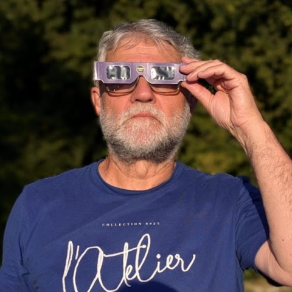

Stéphane Canu
Enseignant-chercheur, INSA Rouen Normandie, département ASI
Laboratoire LITIS (EA 4108), Normandie Université
scanu [at] insa-rouen.fr · 02 32 95 98 44
INSA Rouen, bâtiment Bougainville, avenue de l'Université, 76801 Saint-Étienne-du-Rouvray
Recherche
Membre de l'équipe MERIT.ia (Méthodologies pour l’Efficacité, la Robustesse, l’Interprétabilité et la Transparence en IA) du LITIS. Mes travaux portent sur l'apprentissage statistique, avec les thèmes suivants :
- Deep learning
- Méthodes à noyaux (SVM)
- Optimisation en nombres entiers pour l'apprentissage
- Sélection de modèle
- Factorisation à grande échelle pour la recommandation
Actualités
- Porteur du projet EulCat.
- Co-chair de la conférence ECML PKDD 2022, avec Massih-Reza Amini.
- Projet RAIMo (Chaire IA).
- Organisation à Rouen de CAp 2018, la conférence française sur l'apprentissage automatique.
- Le projet Deep in Normandy de NormaSTIC est reconnu NVIDIA GPU Research Center.
- Coordination du projet ANR Deep in France.à confirmer
Explorer
Parcours
- Chargé de mission IA au ministère de l'Enseignement supérieur et de la Recherche.à confirmer
- Ancien directeur adjoint de la fédération de recherche NormaSTIC (FR CNRS 3638).
- Ancien membre du CNU section 61.
- Chargé de mission scientifique (CMS) au HCERES, 2019 à 2020.
- Un an de congé de recherche dans le groupe d'apprentissage automatique de l'ANU, à Canberra.
- Ancien membre du réseau d'excellence européen PASCAL.